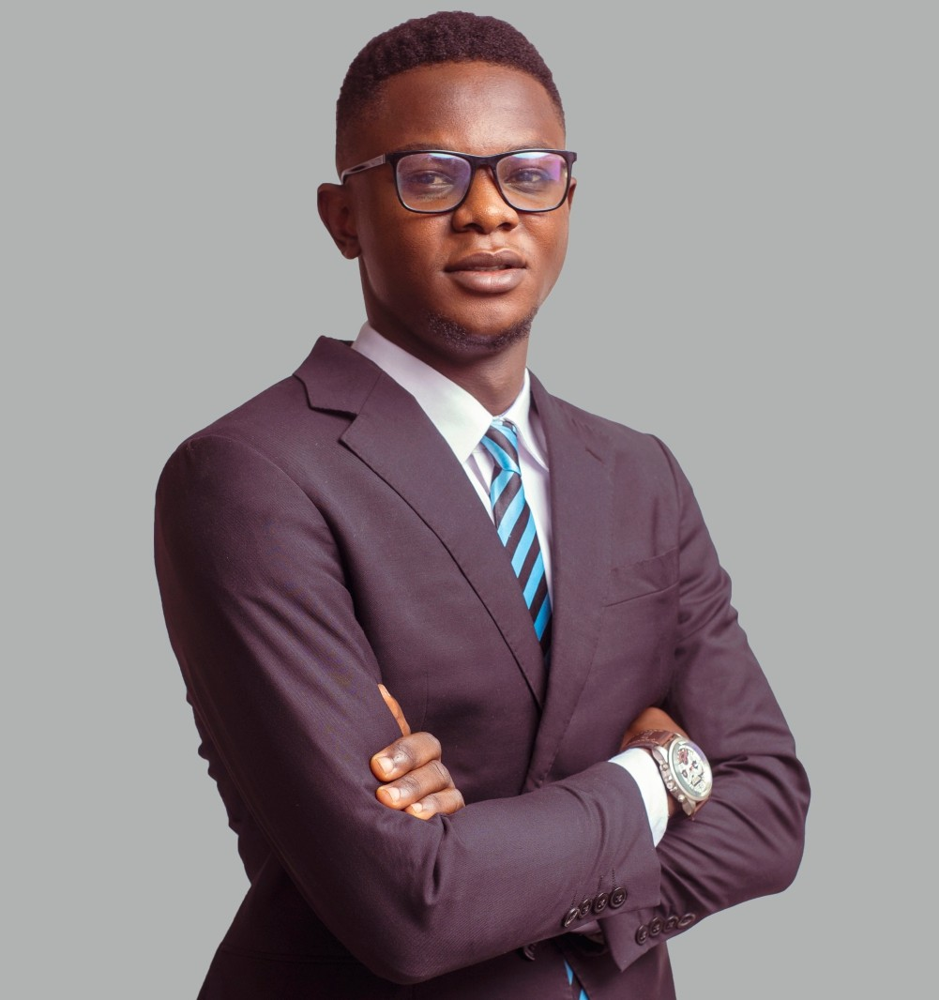

Réseaux & interconnexion
Configuration, dépannage et optimisation de réseaux Cisco et MikroTik ; routage, commutation et segmentation.
Consultant technique · Formateur · Accompagnement académique
Je conçois, configure et améliore des solutions de réseaux et d'infrastructures informatiques. J'accompagne aussi les professionnels et les étudiants dans leurs projets et le développement de leurs compétences techniques.

Ingénieur orienté réseaux, télécommunications et infrastructures IT, j'associe diagnostic, intervention technique et transmission des connaissances. Mon parcours comprend une première intervention de dépannage en 2022, une expérience de technicien réseau chez Empreinte Tech à partir de 2023 et une activité d'IT Support chez Orioncom depuis 2024.
J'interviens également comme consultant technique et formateur depuis plus de trois ans.
2022
Première intervention technique : dépannage et rétablissement d'un service de téléphonie.
2023
Technicien réseau — Empreinte Tech.
Depuis 2024
IT Support — Orioncom.
En parallèle
Consulting, formation et accompagnement de projets techniques.
Des interventions définies selon les besoins, le périmètre technique et les contraintes de chaque projet.
Configuration, dépannage et optimisation de réseaux Cisco et MikroTik ; routage, commutation et segmentation.
Configuration Fortinet, politiques d'accès et sécurisation des infrastructures sur des périmètres maîtrisés.
Installation et configuration de solutions Hikvision, caméras IP et systèmes de contrôle d'accès.
Installation, configuration et diagnostic de systèmes de communication sur IP.
Interventions sur points d'accès UniFi et solutions radio point-à-point et point-multipoint.
Diagnostic technique, documentation, recommandations et accompagnement à la mise en œuvre.
Accompagnement pédagogique adapté au niveau et aux objectifs de chaque apprenant.
Cadrage du sujet, méthodologie technique, prototypes, préparation des démonstrations et soutenances. L'étudiant reste auteur de son travail.
Encadrement de laboratoires réseaux, configurations, simulations et dépannage.
Parcours pratiques ciblés sur Cisco, MikroTik, Fortinet, téléphonie IP et infrastructures réseau selon les prérequis.
Diagnostic d'une interruption de service, identification d'un câble endommagé, réparation et vérification du retour au fonctionnement.
Les réalisations de consulting seront publiées progressivement, après vérification des éléments communicables.
Présentation prochaine des ateliers, supports techniques et projets pédagogiques.
La confidentialité des clients et de leurs infrastructures est respectée : les informations sensibles ne sont pas publiées.
Contactez-moi pour discuter du contexte, des objectifs et des modalités d'accompagnement.
Les coordonnées professionnelles et le formulaire de contact seront ajoutés après validation.